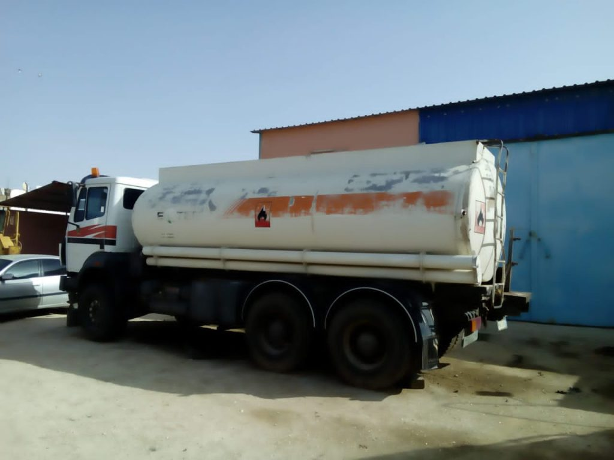

Toyota GX
Vehicule tout terrain pour supervision, liaison et appui operationnel.
Notre flotte
Forte de plus de 10 ans d'experience, MML dispose d'un parc diversifie d'engins et de vehicules repondant aux standards techniques et reglementaires. Les equipements sont inspectes et maintenus pour assurer performance et disponibilite.

Vehicule tout terrain pour supervision, liaison et appui operationnel.
Pick-up robuste pour les deplacements et les besoins quotidiens de chantier.
Les images sont conservees localement pour que la page reste rapide et stable.